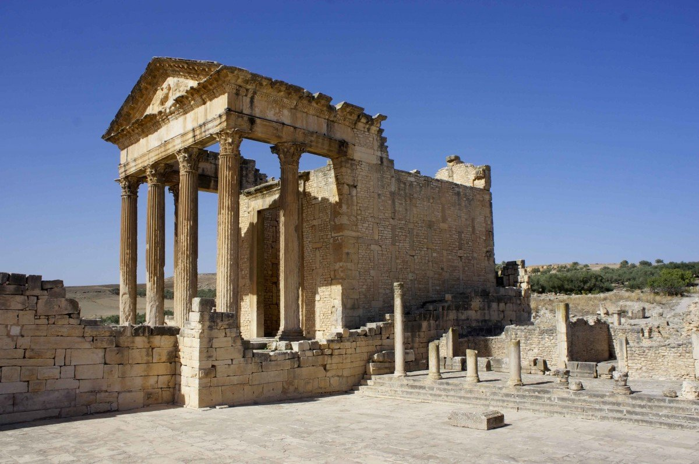
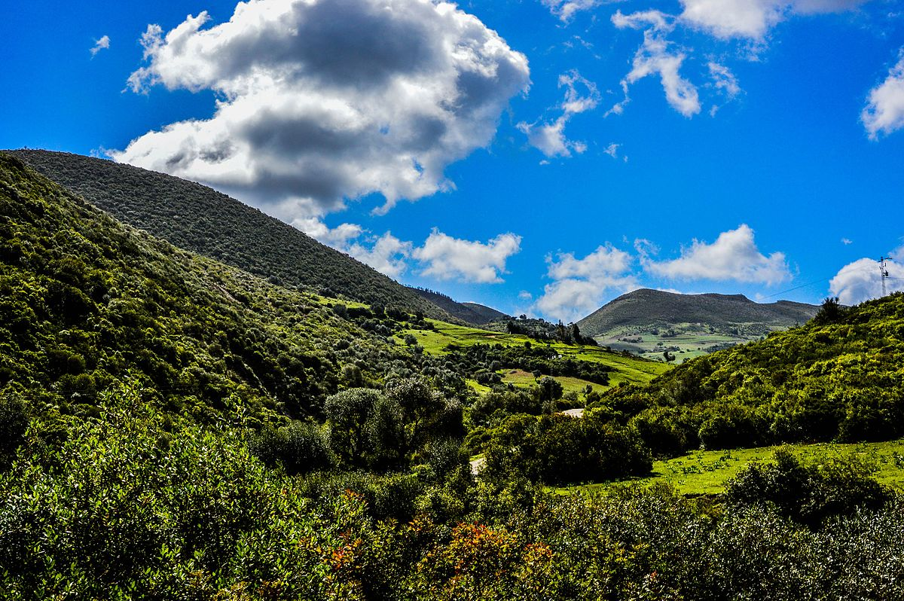
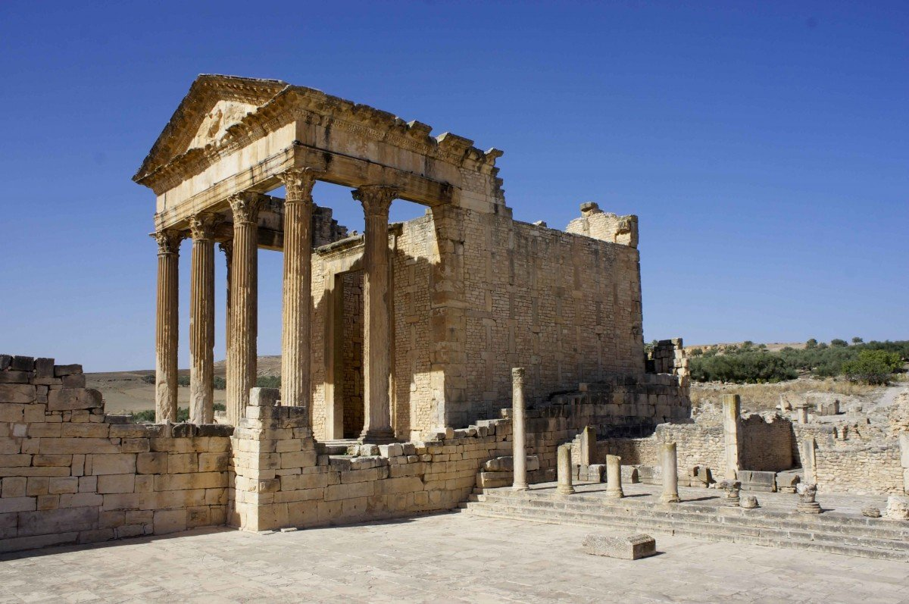
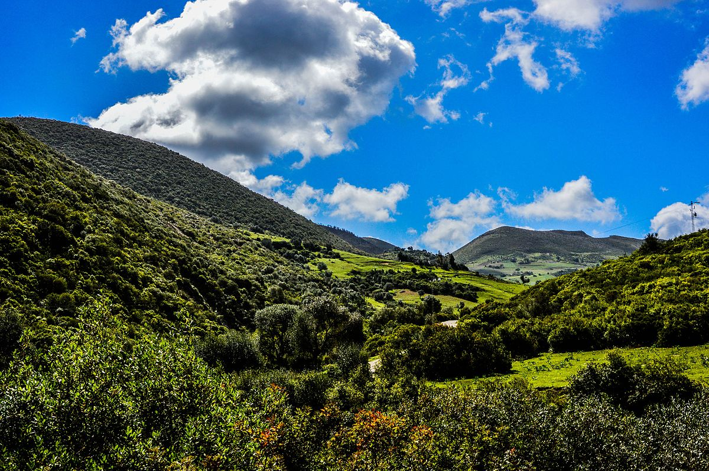
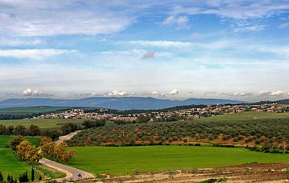
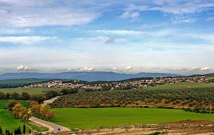
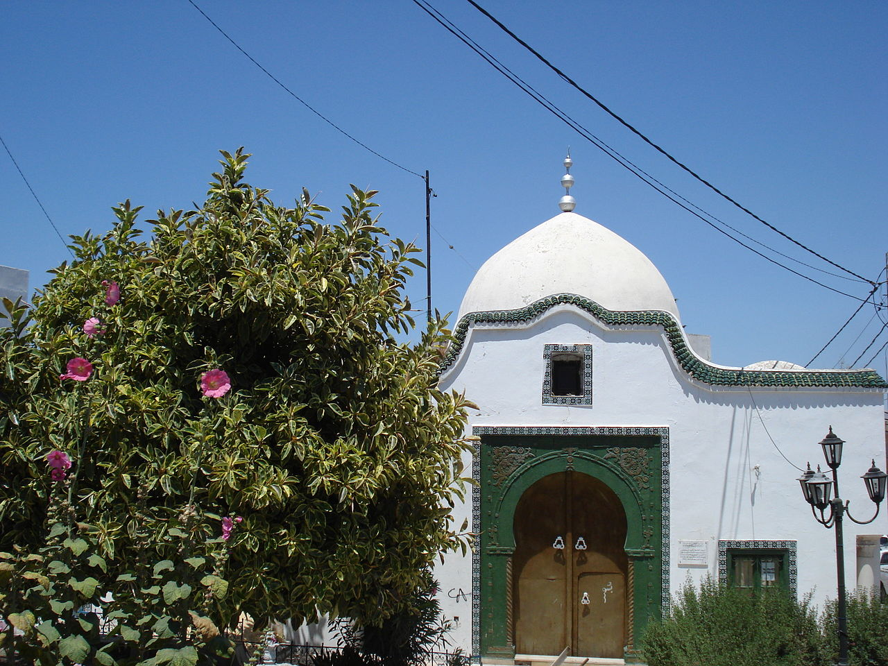
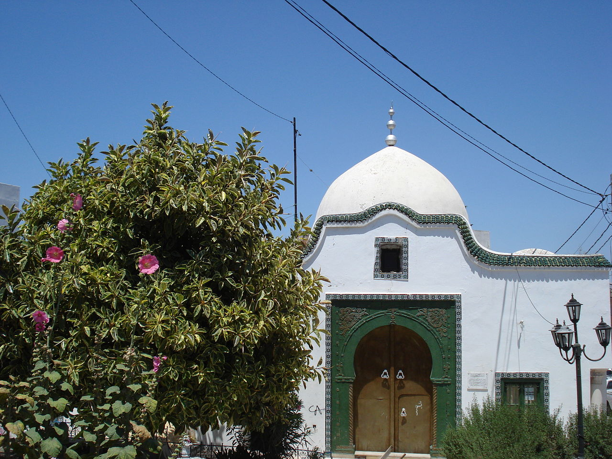

Béja est une ville du Nord-Ouest de la Tunisie située à une centaine de kilomètres de Tunis et à une cinquantaine de kilomètres de la frontière tuniso-algérienne. Chef-lieu du gouvernorat du même nom, elle constitue une municipalité comptant 62 303 habitants en 2014.

En 670, Oqba Ibn Nafi al-Fihri fonde Kairouan et en chassent les Byzantins qui se replient vers Carthage, prise en 695, puis vers le nord-ouest, notamment à l'abri des murailles de Béja. En 696, un cousin du prophète Mahomet, meurt dans une bataille à Béja tout comme un grand nombre de soldats. L'année suivante marque la chute de l'exarchat de Carthage et la fin du règne byzantin.
Témoignage de son passé romain et en raison de sa richesse en produits laitiers, Béja est aussi connue pour la fraîcheur de ses fromages traditionnels et surtout de sa rigouta toujours présente sur la table du déjeuner et dans le tajine Les desserts de la région sont la zlabia (pâtisserie), les mkharek, la rfissa et les ghrayefs .Les Béjaoises cultivaient du blé et de l'orge qui constituaient la base de leur alimentation : mhamsa au kadid ou aux dattes et hlalem aux légumes secs avec kadid.

 




 

 
